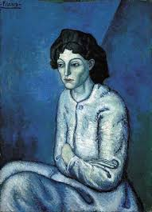
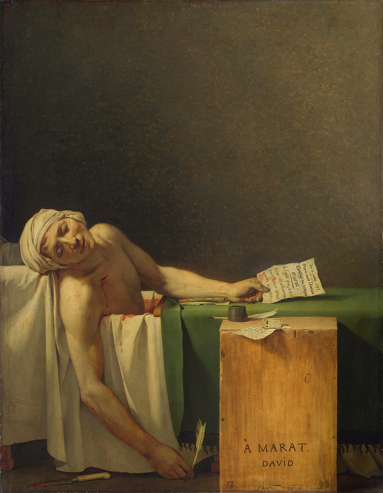

უძლური ადამიანები არიან დადებითი, კეთილშობილი პიროვნებები, რომლებშიც უარყოფითი თვისებების, ბოროტების ნიშნების მოძებნა ძნელია. ამგვარ ადამიანებს ხშირად აქვთ ეგზისტენციალური კრიზისი, შესაბამისად ჰგონიათ, რომ მათ ცხოვრებას აზრი არ აქვთ,საკუთარი მესგან გაუცხოებულნი არიან, ხშირად აქვთ უმწეობისა და ამაოების განცდა, არასრულფასოვნების კომპლექსი. ასევე დანაშაულის შეგრძნება, მიუხედავად იმისა, რომ არაფერი დაუშავებიათ. შეიძელბა ითქვას, რომ აქვთ განცდა უფსკრულისა, ანუ მუდმივად არის მათ ცნობიერებაში ორი მე_ს დაუოკებელი ჭიდილი. უმწეო ადამიანები მუდმივად უსვამენ საკუთარ თავებს შემდეგ კითხვებს_ ვინ არიან რეალურად ისინი? და ვინ უნდა რომ იყონ ან როგორ წარმოუდგენიათ საკუთარი თავები? თუმცა, ამკითხვევზე პასუხს ვერ ხვდებიან ან არ იციან. შესაბამისად, უმწეო ადამიანები საკუთარ თავთან, საკუთარ შინაგან ბუნებასთან არიან დამარცხებულები.
1901-1902 წლებში შესრულებული ნახატი - Woman with Folded Arm, რომელზეც ვხედავთ პარიზის ციხის პატიმარი ქალის პორტრეტს. ნახატზე დაკვირვების შედეგად მნახველამდე მოდის ქალის განცდები და ემოციები, რომლებიც მხატვარს უნდოდა ჩვენთვის გადმოეცა. ქალის პოზისა და გარშემო გამეფებული მკაცრი სივრცით ვიგებთ , ქალის განცდებს, რომ იგი იტანჯება. ასევე მისი გადაჯვარედინებული ხელები და უმწეო სხვაგან მიმარული გამოხედვა, მზერა ერთგავარად მიგვანიშნებს მის გარიყულობასა და მარტოსულობაზე. იგი ემოციებისგან სრულად დაცლილია და შეინიშნება მისი ფიზიკური და ემოციური უძლურება იზოლაციის მიმართ. ცისფერი, ცივი ფერების დომინირება და უკან დარჩენილი სიცარიელე მიგვანიშნებს ქალის დრამატულობაზე. ქალის პორტრეტი რეალისტურად არის გადმოცემული და შეგვიძლია ვივარაუოთ, რომ მხატვარი თანაუგრძნობს ქალს.
ადამიანს დაბადების წამიდან თან სდევს სიკვდილის იდეა, ისევე როგორც ყველაფერი ადამიანის ცხოვრებაც წარმავალია. ფაქტობრივად, რელიგიური, კულტურული, სოციალური, ფილოსოფიური თუ საზოგადოებრივი აღქმები, მოსაზრებები და რწმენა-წარმოდგენები თავიდანვე გვამზადებენ სიკვდილისთვის, ანუ ცხოვრების იმ მომენტისთვის, რომელიც აუცილებლად ყველას დაუდგება. შესაბამისად, ჩვენ დაბადებიდან ვემზადებით ცხოვრების ბოლო დღისთვის და იმ მეტამორფოზისთვის, რაც ჩვენ უნდა განვიცადოთ სიკვდილის სახით. თუმცა, რა დგას სიკვდილის მიღმა, რა მოელის ადამიანს მის შემდეგ ან არის კი რაიმე გაგრძელება თუ ეს მოვლენა ჩვენი ცხოვრების დასკვნითი აკორდია?! ამ საკითხის გარშემო მხოლოდ რწმენაზე დაფუძნებული განსხვავებული შეხედულებები ადამიანისთვის ბუნდოვანებასა და გაურკვევლობას იწვევს.
სიკვდილის სახის გამოსახვასა თუ ადამიანის მის მიმართ დამოკიდებულებას მხატვრობასა და ლიტერატურულ ნაწარმოებებში ხშირად შევხვდებით. მაგალითად შეგვიძლია მოვიყვანოთ მარიან სტოკსის ნამუშევარი ,,ახალგაზრდა გოგონა და სიკვდილი’’. ნახატში ნაჩვენებია ის შიში, რომელსაც ადამიანები სიკვდილის მოახლოებისას განიცდიან. გოგონას სახეზე შეინიშნება დაბნეულობა, შიში. ასევე ყურადღებას თუ მივაქცევთ მის ხელებს, დავინახავთ მის შინაგან განცდებსა და მდგომარეობას.

სოციალური ქალები, რომლებსაც შეგვიძლია რეალისტურიც კი ვუწოდოთ, ცხოვრობენ ჩვეულებრივი, ყოველდღიური, ყოფითი ცხოვრებით. ღვთაებრივი ქალისგან განსხვავებით ისინი უმეტესად არ ფლობენ დიდ ენერგეტიკულ მუხტს. შესაბამისად, მათ არ შეუძლიათ საპირისპირო სქესის წარმომადგენლები აიძლონ გააკეთონ მითთვის რაიმე განსაკუთრებული. ამგვარი ქალების ხშირ შემთხვევაში, ჩაცმულობაც არაფრით გამოირჩევა. მათთვის დამახასიათებელია სიკეთე და სათნოება, ასევე მომღიმარი სახე. ფილმებსა თუ წიგნებში სოციალური ქალების სახეები ერთნაირად არის გამოსახული.
განვიხილოთ მისი ერთ-ერთი ცნობილი ნახატი სახელწოდებით -La Glaneuse, რომელზეც გამოსახულია ყანაში მომუშავე ქალი. იგი ყოველდღურ საქმიანობაშია ჩართული. ნახატზე დაკვირვებისას თვალშისაცემია ქალის ერთგვარად შესიებული, არაბუნებრივად ზომაში გაზრდილი ხელები და ფეხები. ამგვარ ხერხს მხატვარი მიმართავს, რადგან ზუსტად დაგვანახვოს თუ როგორ გამოიყურება სოციალური ქალი, რომელიც შრომაში არის ჩაფლული. ისევე აღსანისნავი მისი კანის ფერს შორის კონტრასტი. მაგალითად სახისა და კისრის არეში მისი კანის ფერი უფრო მუქია ვიდრე ხელ-ფეხზე. ქალში ვერ ვხედავთ სინაზეს, აქვს განიერი მხრები, რომელიც მამაკაცისთვის არის დამხასიათებელი. შეგვიძლია ვთქვათ, რომ შეინიშნება ნაკლებად სქესისმიერი ნიშნები, თუმცა ბრეტონი მაინც უნარჩუნებს ქალს ქალურ იერს რაც მაგალითად გამოიხატება მის პატარა, დახვეწილ სახის ნაკვთებში.

ხელოვანები მათ ნამუშევრებში ხშირად მიმართავენ მნიშვნელოვან ხერხს, ციტირებას, რომელიც კონტექსტურად უკავშირდება უკვე შექმნილ რომელიმე ნამუშევარს. ეს შეიძლება იყოს მხატვრის ნახატი ან მწერლის ნაწარმოები. მნახველი მათ აკავშირებს ერთმანეთთან და ცდილობს იმის გაგებას, თუ რა მიზანი ამოძრავებდა ავტორს, რისი თქმა უნდოდა ან რაზე მიგვანიშნებდა ამით? ჩემი აზრით, ნამუშევრებში გამოყენებული ციტირება მაგალითად ფილმსა და ნაწარმოებს უფრო საინტერესოსა და განსხვავებულს ხდის. შესაბამისად, მწერლები, რეჟისორები, მხატვრები ხშირად იყენებდნენ ციტირებას თავიანთი ნამუშევრების შექმნისას. მსგავსი მაგალითები მრავლად გვხვდება სხვადასხვა ფილმებსა და სერიალებში, რომლებზე თვალის შევლებისთანავე მარტივად მივხვდებით თუ რომელ ნახატს უკავშირდება ეს კონკრეტული სცენა.
მაგალითი, რომელსაც განვიხილავ არის ალექსანდრე პეინის 2002 წლის ფილმი ,,შმიდტის შესახებ’’, რომელიც ლუი ბეგლის მიერ დაწერილი ამავე სახელწოდების რომანის ეკრანიზაციაა. ფილმში აღწერილია სადაზღვევო კონპანიაში მომუშავე ერთი ჩვეულებრივი ადამიანის უორენ შმიდტის ცხოვრება პენსიაზე გასვლის შემდეგ.ფილმის ერთ-ერთი კადრი ზუსტად ციტირებს ჟაკ-ლუი დავიდის ნახატს სახელწოდებით ,, მარატის სიკვდილი’’, რომელიც მხატვარმა 1793 წელს შეასრულა. ნამუშევარი ასახავს, ფრანგი რევოლუციონერის ჟან-პოლ მარატის მკვლელობას. რაც შეეხება ნახატსა და ფილმს შორის კავშირს, აშკარაა, რომ შმიდტი ისეთივე მკვდარია შინაგანად, როგორც მარატი გარეგანად. მას თავი უუნარო მოხუც, პენსიონერად მიაჩნია, რომელიც ოდესღაც ყველას სჭირდებოდა, ახლა კი გადაავიწყდათ. კადრი ანალოგიურია, ზუსტად ემთხვევა ნახატის ყველა დეტალს. განსხვავებით შარლოტა კორდეის წერილისა, რომელიც მარატს უჭირავს ხელში, შმიდტი წერილს თავად წერს. ასევე განსხვავდება ფერები, დავიდს შედარებით უფრო თბილი ფერები აქვს გამოყენებული, ვიდრე ფილმის ამ კადრში. ვფიქრობ რეჟისორს კარგად გამოუვიდა ციტირება და ეს ყველაფერი ფილმის მაყურებლისთვისაც მარტივი გასაგები და თვალშისაცემია.
